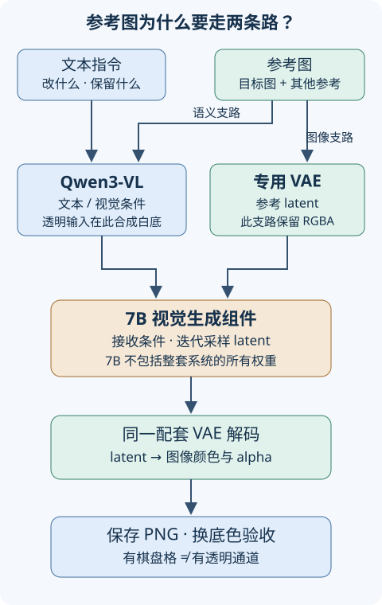

本讲目录
第 23 讲 · Qwen-Image 2.1：统一生成、编辑与透明图
你有一张人物图和一张衣服图，想换衣服、保留脸和姿势，再把人物做成透明素材。为什么不能把旧 Qwen 工作流里的模型文件换掉就运行？因为这次一起改变的是生成模型、条件编码和 VAE 接口。本讲先跑通配套模板，再用对照实验检验“保留了什么”。
核验日期：2026-09-21。 官方于 9 月 20 日公开 Qwen-Image 2.1 权重，并提供 ComfyUI 原生入口。本讲已核对官方模型说明、节点源码和两份模板；尚未在你的 RTX 4060 Ti 16GB 上执行模型推理。第 06 讲的机器记录仍是历史快照。官方发布与代码 · ComfyUI 权重
先修：第 04 讲的三件套、第 08 讲的控制变量、第 10 讲的兼容矩阵。学完应能解释组件为什么必须配对、编辑参考图怎样进入模型，以及怎样证明输出真的透明。
1. 同一个模型，三类任务
| 任务 | 输入 | 成功要检查什么 |
|---|---|---|
| 文生图 | 文本；可明确要求 RGBA | 构图、文字内容、尺寸；不能只看缩略图 |
| 指令编辑 | 文本 + 第一张目标图；可加其他参考图 | 修改对象是否正确，未要求修改的脸、姿势、背景是否保留 |
| 透明素材 | 透明生成指令，或带透明通道的编辑输入 | PNG 的 alpha 通道、半透明边缘、深浅背景合成结果 |
官方模型说明的 7B 是视觉生成组件，不是整个推理系统。文本编码器也有权重，VAE、激活和缓存也占内存。2K 与多参考图是模型能力范围，不是本机显存与速度测量。官方使用说明目前按最多 10 张参考图组织任务；课堂先用 1–2 张，明确每张职责。
权重采用 Qwen Research License：条款限定研究或评估用途，商业使用须另行取得许可。因此这里写“公开权重”，不把它等同于 Apache-2.0 或无限制商用。具体许可证
2. 三件套与双路参考条件

把它理解成两份互补的描述：语言视觉编码器提供“这是什么、要求怎样改”的条件表示；VAE 提供图像的潜空间表示。这个比喻只帮助区分接口，模型并没有人类式的“理解”和编辑保证。
官方架构说明为 32 层 single-stream DiT、Qwen3-VL 文本视觉编码器及 64 通道、空间压缩 16 倍的 RGBA VAE。ComfyUI 的 TextEncodeQwenImage21 同时返回正向条件、负向条件及画布 latent。1024×1024 的教学形状账本为：
这里 \(B=1\) 是批大小，\(H,W\) 是输出像素尺寸。它不是 SD 示例的 4 通道、8 倍压缩接口。尺寸相同不代表 VAE 或旧 LoRA 能互换。
透明参考图还有一个细节：当前节点把 RGB 与白底按 alpha 合成后交给视觉编码器，而 VAE 支路保留四通道。因而“视觉编码器看见白底”不等于“输出必须是白底”。架构说明 · 本次核对的节点源码
3. 下载哪些文件，怎样接入
先备份旧 workflow 与用户配置，更新到包含 Qwen Image 2.1 节点的 ComfyUI，并同步其前端和模板依赖。稳定版/桌面端可能晚于源码支持；导入失败时检查实际安装版本，不要随机安装一个同名社区节点包。官方更新说明
本次官方模板默认选择下面的 INT8 组合；它是复现起点，不是 16GB 跑通认证。同仓库也有 BF16 选项，选定一种对应组件即可，不必把所有精度都下载。
| 角色 | 默认文件 | ComfyUI 模型目录 |
|---|---|---|
| 生成模型 | qwen_image_2.1_int8_convrot.safetensors |
models/diffusion_models/ |
| 文本视觉编码器 | qwen3vl_8b_int8_convrot.safetensors |
models/text_encoders/ |
| 专用 VAE | qwen_image_2.1_vae_bf16.safetensors |
models/vae/ |
从 Comfy-Org 权重目录取文件；已有 BF16 模型可在对应 loader 中选择。w4a8 是另一个编码器选项，不能把不同量化名称当成相同后端要求。若沿用第 06 讲的外置模型目录，先检查模型路径映射，再按分类放置；不要另建一套互相覆盖的目录。
3.1 直接导入官方模板
保存 JSON 后拖入画布，或从官方 Templates 查找 Qwen Image 2.1。上面是本讲核对过的版本；更新模板时记录新版本和变化。它们使用 subgraph，不是可直接 POST 给 /prompt 的 API JSON；做自动化时应从自己的可运行画布导出 API 格式。
编辑模板中的两张示例图片需要另取，或用你有权使用的目标图和衣服参考图替换 LoadImage。第一张是编辑目标，后面的图负责提供参考；保留参考顺序并用 <image1>、<image2> 指明职责。进入子图可以看到 UNETLoader、CLIPLoader、VAELoader 与 TextEncodeQwenImage21；CLIPLoader 是节点名，这里装的是配套 Qwen3-VL，并不意味着能换成 SD 的 CLIP。
4. 参数要跟着这份模板解释
| 参数 | 本次模板基线 | 怎样做对照 |
|---|---|---|
| steps | 25 | 官方模型示例使用 40；固定其他量再比较 25/40，记录耗时与细节 |
| sampler / scheduler | euler / simple |
先复现基线，再研究其他组合 |
| CFG | 1 | 此时负面提示词不参与 CFG 引导；不要照搬 SDXL 的 5–8 |
| 文生图尺寸 | 1 MP，方图约 1024×1024 | 2K 方图为 2048×2048，即 4 倍像素；不承诺显存只增加 4 倍 |
| 编辑 resolution | 外层模板为 0 | 0 保留各参考图原尺寸并对齐到 32 的倍数，大图输入仍可能占用很多内存 |
| custom_size | 默认关闭 | 输出画布跟第一张参考图；打开后另改宽高可能导致编辑偏移 |
| seed | 记录并固定 | 将运行后的种子策略设为 fixed；只固定数值但仍选 randomize 不能复现 |
用常见 CFG 写法说明 CFG=1 的含义：若 \(v_+\) 和 \(v_-\) 分别代表正、负条件下的模型预测，
代入 \(s=1\) 就得到 \(v_+\)。所以负面词换来换去而结果不变，不一定是输入框坏了。想研究负面提示词，要把 CFG 作为单独实验变量，并检查画面是否退化；本讲不把提高 CFG 当成质量优化保证。
4.1 resolution 并不等于强制边长
对于非零 \(R=\texttt{resolution}\)，参考图宽高比 \(r=W/H\) 保持近似不变，目标面积约为 \(R^2\)。联立面积和比例：
当前实现再将两边分别舍入到 32 的倍数。举例：1536×1024 的参考图，\(R=1024\) 时变为约 1248×832，而不是1024×1024。宽高取整后面积不必恰好等于 \(R^2\)。这与文生图 ResolutionSelector 的 MP 控件是两套单位。
先预测再操作：同一张大图分别用 resolution=0 和 1024，记录进入编码器后的宽高、输出画布和显存。只看最终 PNG 是方图还是长图，无法判断过程中有没有缩放。编辑模板与参数注释
5. 三个可复现练习
A. 中文海报：区分“会画字”和“字完全正确”
提示词自行写为：“生成科学展览海报，浅蓝背景，中央一个简洁的光学棱镜；标题必须是『光与颜色』，下方只写『周六 14:00』，不要增加其他文字。”固定 seed、尺寸和精度，比较25与40步。逐字检查遗漏、错字、标点和排版；至少换三个种子重复，不能用一张漂亮结果证明稳定性。
B. 双图换衣：把保留项写成验收条件
选择一张完整人物图接 image_1，一张清楚展示衣服的图接 image_2。提示词自行写为：“将
对照原图检查脸、手、衣服纹理、遮挡和背景。指令中的“保留”不是硬约束；局部编辑也不天然等于带遮罩重绘。若只允许袖口区域变动，须另核对是否有匹配的 mask 工作流，不能把旧 SD inpaint 节点强接进来。
C. 透明贴纸：检查 alpha，而非棋盘格
先描述一个边缘清楚的物体，例如“蓝色玻璃小鲸鱼贴纸，柔和高光”，再在提示词中明确要求 RGBA 格式、alpha 通道和透明背景。输出用模板的 SaveImageAdvanced 保存 PNG。与普通 RGB 版本使用相同 seed 对照。
普通图片也能画出棋盘格；那是像素颜色，不是透明。RGBA 中 \(\alpha=0\) 透明、\(\alpha=1\) 不透明，教学用的线性色彩合成为：
\(F\) 为前景、\(B\) 为背景、\(C\) 为合成颜色，各分量归一化。实际色彩管理需要在线性空间运算；不要把这个式子直接当成所有软件的 sRGB 实现。将 PNG 分别放到深灰、白色和彩色底上，观察发丝、玻璃或软阴影边缘。如果只有白底能掩盖光晕，这个素材还没通过验收。
在装有 Pillow 的 Python 环境，可检查实际通道：
from PIL import Image
im = Image.open("output.png")
print(im.mode, im.size)
has_alpha = "A" in im.getbands() or "transparency" in im.info
if not has_alpha:
print("文件没有透明信息")
else:
alpha = im.convert("RGBA").getchannel("A")
print("alpha 范围:", alpha.getextrema()) # (255, 255) 表示全不透明
JPEG 不保留 alpha。不要只把 JPEG 扩展名改成 PNG；也不要把预览软件的底色当成实际图像通道。
6. 16GB 上机记录与排障
先完成文生图小批次，再增加参考图和输出尺寸。每个实验至少填写：
日期 / ComfyUI commit / frontend / 模板 commit:
三个权重的文件名、版本、哈希、精度:
输入图哈希 / 参考顺序 / 实际缩放后宽高:
提示词 / seed / seed策略 / steps / CFG / sampler / scheduler:
batch / offload与cache设置 / 输出尺寸:
加载峰值 / 采样峰值 / VAE峰值 / 系统内存峰值 / 耗时:
结果: PASS 或 OOM/报错；PNG通道、文字与保留项检查:
- 缺
TextEncodeQwenImage21或子图打不开：先查核心、前端和模板版本。旧工作流的节点类型不同，替换文件名不能补出接口。 - 找不到模型：按 loader 检查路径映射与精确文件名，重扫模型列表；不要靠重命名把旧权重冒充新权重。
- shape 或解码错误：回到配套三件套，撤掉未经核验的旧 VAE、LoRA 和 ControlNet。
- OOM：记录失败发生阶段，减少像素预算、参考图数量或 batch，再评估量化和卸载；文件大小不等于峰值显存。
- 编辑位置变了：检查第一张参考图、缩放参数、
custom_size，以及提示词是否误指了参考图编号。
本次仅完成课程、模板结构与来源核验；上机表格没有实测数字，Win 安装没有被自动升级。
迁移题
1. 7B 模型是否一定能放进 16GB 显存？
不能。7B仅指生成组件，编码器、VAE、激活和缓存仍需内存；量化、卸载和图像尺寸也影响峰值。必须记录具体三件套和完整运行，而不是只算生成权重字节数。
2. 两个 PNG 都显示棋盘格，怎样区分透明图和画了棋盘格的图？
检查是否存在 alpha 或透明信息，再检查其范围并换底色合成。没有透明信息或 alpha 全为255，说明背景没有透明；有非255值也只证明某些像素透明，仍要检查边缘和主体是否正确。
3. 同一 seed 下把负面词换掉没有变化；编辑长图也没有变成1024方图。这两点一定是故障吗？
不一定。CFG=1时公式只剩正向预测；非零resolution约束参考图面积并近似保留长宽比。应先核对参数语义，不能把SDXL经验或控件名字当作通用规则。
来源与版本
本讲将教学推导与官方事实分开：CFG代入、面积缩放和alpha合成是解释；能力、节点和文件名按以下来源核验。后续官方更新可能改变模板默认值。
- Qwen 官方模型卡与发布说明。
- Comfy-Org 三件套说明。
- 固定文生图模板与本讲前面的固定编辑模板。
- 核心节点源码快照：实现端口数不等于已验证的多图使用上限，课程仍按官方10参考图说明。
下一步回到工作流实验室，用同一份五层依赖账本保存你自己的运行证据。